How to play
A walk across the screen, card by card. Each part has a picture of the app playing, what it does and what each control does. The texts are the same as LEARN, inside the app.
The screen

In the centre, the sphere of water with the five organisms; around it, the cards, numbered 01 to 11; below, the strip of desire; above, the header.
The first control of each card is its door: that module's amount in the mix. At zero the module is off and the other controls are greyed out. Raise the door first, then move the others. Everything is slow on purpose: give each gesture a minute.
ECOSYSTEM
The aquarium, the web and the music
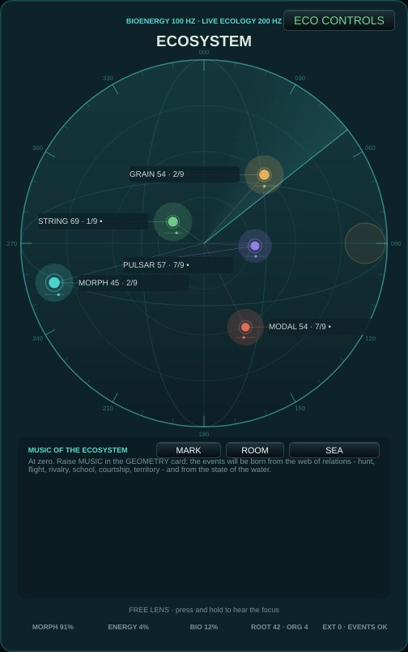
Five organisms live in a sphere of water: they see, hear, hunt, flee, court and defend territory. The coloured lines are the web of relations; the panel below shows the state of the water, the tension, the key and the latest events. Press and hold on the sphere to move the lens and listen closer.
Try: Watch a coral line (a hunt) grow thick, then listen for the terminal buzz and the capture; after it, a cadence.
| COHESION | How tightly the school swims and sings together. |
|---|---|
| DANGER | Fear in the water: sharper accents, more ornaments, more flights. |
| SPARSE FOCUS | Listening mode: few, focused events. |
| ENERGY MEMORY | Listening mode: energy remembered and released slowly. |
| GEOMETRIC CYCLE | Listening mode: the orbits' cycles lead. |
| COLLECTIVE DRIFT | Listening mode: the group drifts together. |
ECOLOGY
Desire and geometry
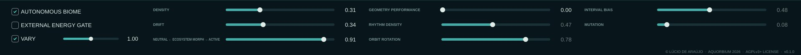
The lower strip holds the desire of the ecosystem (density, drift, morph) and the geometric sequencer of the orbits. Desire changes tendencies, never writes events.
Try: ECO CONTROLS (in the aquarium) opens cohesion, danger and the listening modes, and the scenes.
| DENSITY | How much happens: the ecosystem's desire for density. |
|---|---|
| DRIFT | Agitation: left is calm water, right is restless. |
| NEUTRAL ← ECOSYSTEM MORPH → ACTIVE | From a neutral mix to the ecosystem's full spatial and timbral influence. |
| GEOMETRY PERFORMANCE | Zero: autonomous geometry. Raise to enable rhythm, rotation, intervals and mutation; changes appear at the next events. |
| RHYTHM DENSITY | How many steps of each orbit sound. |
| ORBIT ROTATION | Rotates where each orbit's pattern begins. |
| INTERVAL BIAS | Leans the melodic steps towards smaller or wider intervals. |
| MUTATION | How often the orbits change their shape. |
| AUTONOMOUS BIOME | The biome lives and sounds by itself; turn off to play it only from outside. |
| EXTERNAL ENERGY GATE | External notes (MIDI, keyboard) gate the biome's energy. |
| VARY | VARY: the controls move by themselves over the music's time, slowly and in relation, around where the seed or your hand left them - warmer and quicker at the climax of the piece, settling at rest. The output stage never moves. Move any control and it breathes around your value. Off: everything stays where it is. Each opening also proposes another biome - water, light, population, bodies, which modules wake; the state you left is kept as opening.previousStateV1 in the settings. |
BRAIN
Uncertainty and state
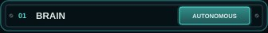
The bio-energy and the internal decisions of the biome: it needs no external note to live. Its state feeds every other card.
Try: Leave the biome alone for a few minutes and listen to how it moves through day and season.
| CLOCK | BRAIN: how often the Brain's register turns (0.06 to 0.9 Hz). Centre = as before. |
|---|---|
| COORDINATION | BRAIN: how much the organisms share one leaning - at 0 each its own, at 1 a school. Zero = as before. |
GEOMETRY
Form, structure and the ecological music
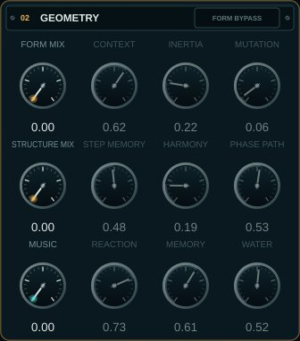
Three layers of composition: FORM (a Markov memory of sections), STRUCTURE (step memory and harmony) and the MUSIC of the ecosystem, where events are born from the web of relations between the organisms and from the state of the water.
Try: Raise MUSIC to 1, then move WATER slowly to the left: listen to the music freeze into a crystal; then to the right, into turbulence and boiling.
| FORM MIX | Zero: formal memory transparent. Raise to move section and contour at the next collective events. |
|---|---|
| CONTEXT | How much the ecological state attracts the next formal region. |
| INERTIA | Tendency to stay in the current formal region. |
| MUTATION | Distributed probability of jumps between formal regions. |
| STRUCTURE MIX | Zero: previous path intact. Raise to enable step memory and progression. |
| STEP MEMORY | Contribution of the addressable memory to pitch and duration of events. |
| HARMONY | Contribution of the weighted chords to the pitch field. |
| PHASE PATH | Ecological path: day on the left, season on the right. |
| MUSIC | Zero: previous route intact. Raise so that the music comes from the ecosystem: hunt, flight, courtship, territory, the web of relations. |
| REACTION | How strongly the organisms react to what they see and hear through the water. |
| MEMORY | Left: songs repeat (identity). Right: they transform and are copied among allies. |
| WATER | Centre: the water follows the season. Left cools towards ice; right heats towards boiling. The change of state takes the time of latent heat. |
TIMBRE
The organisms' bodies
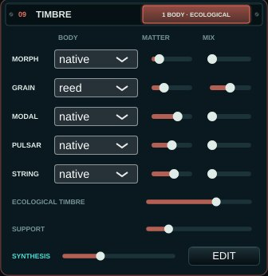
Each organism can sing with a second body - voice, matter, breath, string, drop, fold, membrane, glass, choir, bow or reed - mixed with its native body. ECOLOGICAL TIMBRE lets the water, the hunt, the flight, the courtship, vigour and health transform them. Below, SYNTHESIS and EDIT open the synthesis device: a voice per organism that you build, played by the ecosystem.
Try: Give MORPH the voice and PULSAR the drop, raise their MIX, then ECOLOGICAL TIMBRE: when the hunter chases, its voice sharpens; when the water boils, the drops thicken.
| BODY | This organism's second body: voice (formant song), matter (harmonic → membrane modes), breath, string, water drop, fold, membrane (water drum → skin), rubbed glass, choir, bow (a bowed string) or reed (a clarinet's tube). |
|---|---|
| MATTER | MATTER: the character inside the body (the vowels of voice and choir; harmonic → membrane; the air of breath; plucked → bowed; drops → rain; the fold; loose drum → taut skin; the brightness and beating of glass; the bow from sul tasto to sul ponticello; the reed's embouchure, dark to bright). |
| MIX | MIX: how much of the second body sounds together with the native body. |
| ECOLOGICAL TIMBRE | ECOLOGICAL TIMBRE: how much the ecosystem's life transforms the matter and presence of the bodies (water, hunt, flight, courtship, vigour, health). |
| SUPPORT | SUPPORT: the level of the three support organisms - GRAIN, MODAL, STRING - against MORPH and PULSAR, from -6 to +24 dB. They sit about 22-26 dB under the foreground; raise it to bring them forward. 0 dB at the start. |
The synthesis device
A voice you build, for each organism
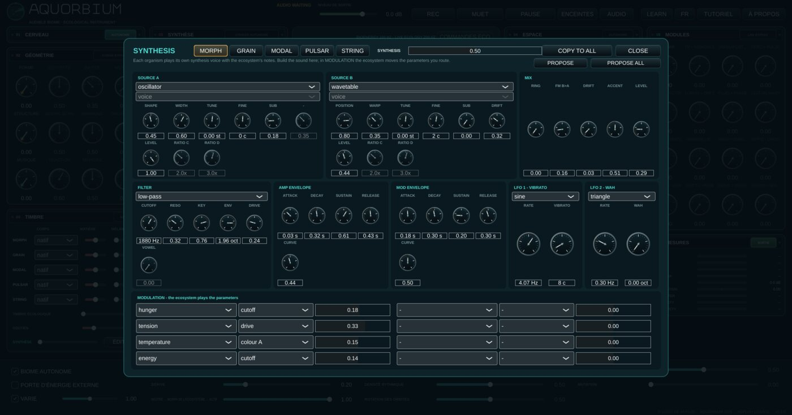
TIMBRE → EDIT opens a synthesiser per organism: two sources (oscillator, noise, FM, wavetable, additive, pulsar, string, matter, chaos, feedback or one of the bodies), RING and FM between them, a filter, two envelopes and two LFOs. The ecosystem plays the notes; in MODULATION, the biome's life - hunger, tension, distance, the water's temperature - moves the parameters you route.
Try: PROPOSE ALL, and SYNTHESIS at half; then change one route at a time and listen to what the ecosystem does with it. The tutorial has five lessons on the device.
| PROPOSE | PROPOSE: a starting patch for this organism, drawn from its species (sources, gesture, register) and its ecological strategy (what reaches the matrix), and levelled with the others. Each press draws another one; the first of a session follows its seed. Edit from there. |
|---|---|
| MIX | SYNTHESIS: how much of each organism's synthesis voice sounds instead of its own body. At zero the instrument sounds exactly as before. |
SYNTHESIS
Organic voices
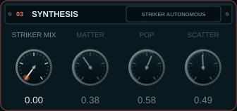
The granular Striker: impacts made of particles, from dust to resonant metal.
Try: Raise STRIKER MIX, then move MATTER and SCATTER while the biome plays.
| STRIKER MIX | Zero: autonomous Striker. Raise to enable MATTER, POP and SCATTER; they answer at the next impacts. |
|---|---|
| MATTER | From short dust to resonant metal. |
| POP | Number of particles per impact. |
| SCATTER | Temporal and spectral scatter. |
SPACE
Perspective and memory
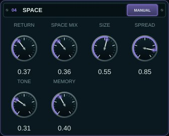
The shared space where the organisms' sounds reflect: early reflections whose size, opening and tone follow the aquarium.
Try: Raise SPACE MIX and SIZE for a large hall of water; lower TONE for a deeper, darker space.
| RETURN | Audible amount of the shared space. |
|---|---|
| SPACE MIX | Zero: autonomous Space. Raise to enable SIZE, SPREAD, TONE and MEMORY. RETURN works independently. |
| SIZE | Time scale of the reflections. |
| SPREAD | Lateral opening of the reflections. |
| TONE | Spectral opening of the reflections. |
| MEMORY | Persistence of the reflection field. |
ENVIRONMENT
Signature and bed
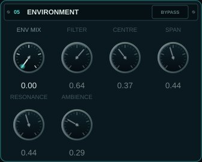
An eight-band spectral signature of the biome and a bed of noise guided by season, water and the glass's integrity.
Try: Raise ENV MIX and AMBIENCE a little: the aquarium gains its own air.
| ENV MIX | Zero: transparent bypass. Raise to enable filter and atmosphere. |
|---|---|
| FILTER | Dry mix of the eight-band spectral signature. |
| CENTRE | Logarithmic centre of the spectral bank. |
| SPAN | Spread in octaves of the eight bands. |
| RESONANCE | Selectivity of the spectral bands. |
| AMBIENCE | Noise bed guided by season, water and integrity. |
TAIL
Synthetic persistence
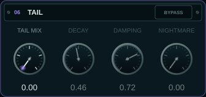
A late, diffuse reverberation after the first reflections.
Try: With NIGHTMARE the tail twists on itself: use it sparingly, as an event.
| TAIL MIX | Zero: transparent bypass. Raise to hear the late tail. |
|---|---|
| DECAY | Length of the synthetic persistence. |
| DAMPING | Progressive absorption of the high frequencies. |
| NIGHTMARE | Twist of the feedback matrix. |
MASTER
Output and integrity
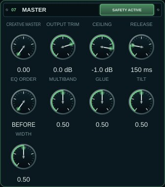
The final level, the safety limiter and an optional creative master (multiband dynamics, width, glue).
Try: OUTPUT TRIM is the volume. MUTE and PAUSE are in the header.
| CREATIVE MASTER | Macro of crossover, multiband dynamics, width and optical glue. Zero is an exact bypass. |
|---|---|
| OUTPUT TRIM | Final technical level: -18 dB to +6 dB; 0.75 is 0 dB. |
| CEILING | Limiter ceiling: -6 dB to -0.1 dB; initially -1 dB. |
| RELEASE | Limiter recovery: 50 ms to 500 ms; initially 150 ms. |
| EQ ORDER | Where the CREATIVE MASTER's tilt EQ sits: BEFORE the multiband dynamics (the dynamics react to the tilted sound) or AFTER them (the tilt colours what the dynamics left). It acts only with CREATIVE MASTER above zero. |
| MULTIBAND | CREATIVE MASTER: the multiband dynamics, less or more than the ecology sets. Centre = the ecology alone. |
| GLUE | CREATIVE MASTER: the slow glue compressor, less or more. Centre = the ecology alone. |
| TILT | CREATIVE MASTER: darker (left) or brighter (right) than the daylight sets. Centre = the ecology alone. |
| WIDTH | CREATIVE MASTER: narrower or wider than the cohesion sets (the bass stays mono). Centre = the ecology alone. |
MODULES
Integrated bank
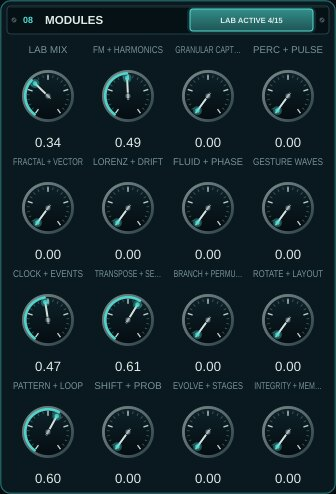
Every coded prototype, gathered in fifteen playable families: a laboratory. LAB MIX at zero keeps the instrument exactly as it is.
Try: Raise LAB MIX, then one family at a time, and listen to what each adds.
| LAB MIX | Master bypass of the bank: zero keeps the previous instrument exactly |
|---|---|
| FM + HARMONICS | FM, harmonics, BiomaBass, school, vocoder and contagion |
| GRANULAR CAPTURE | Granular, isolator, recent resynthesis and lock-in focus |
| PERC + PULSE | Percussion, stochastic mask and HarmonicRippleVoice |
| FRACTAL + VECTOR | Fractal, vector, X/Y polygon and FrequencyShifter |
| LORENZ + DRIFT | Lorenz, drifts and bounded self-feedback |
| FLUID + PHASE | Motion, quadrature, inertia and light binaural |
| GESTURE WAVES | MotionGestureRecorder and bank of motion waves |
| CLOCK + EVENTS | Clock, events, resonators and L-system |
| TRANSPOSE + SELECT | AccumulatingTransposer and ThresholdStepSelector |
| BRANCH + PERMUTE | Branching, reactive thresholds, matrix and Spotlight |
| ROTATE + LAYOUT | Rotation, layout and shared/reconfigurable pools |
| PATTERN + LOOP | Banks, RandomToLoop and cellular automaton |
| SHIFT + PROB | ShiftRegisterMemory and ProbabilityDistribution |
| EVOLVE + STAGES | Evolution, cross-feedback, thresholds and behavioural scenes |
| INTEGRITY + MEMORY | Integrity, memory, hunger and an input-less bus |
Lens
The lens on the glass
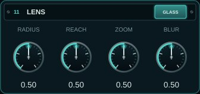
Press and hold on the sphere to put the lens against the glass and listen closely to the creatures passing there; the rest goes out of focus. The four knobs give the lens its shape.
Try: Follow an organism with the lens as it crosses the sphere.
| RADIUS | LENS: the size of the focused spot on the glass. Centre = as before. |
|---|---|
| REACH | LENS: how deep into the water the lens reaches from the glass. Centre = as before. |
| ZOOM | LENS: how much the focused organisms come forward. Centre = as before. |
| BLUR | LENS: how far the organisms out of focus fall back. Centre = as before. |
Meters
The output, measured
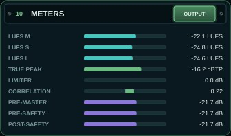
Loudness (momentary, short-term and integrated LUFS), the true peak, the safety limiter's reduction, the stereo correlation and the three taps the ecosystem can listen to: before the CREATIVE MASTER, before the limiter and after it.
The header
Record, mute, listen and learn
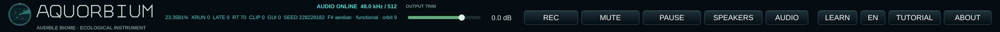
The output volume, REC, MUTE and PAUSE, SPEAKERS or HEADPHONES, the AUDIO device, LEARN, the language, TUTORIAL and ABOUT. The status line shows the session's world and its seed.
Try: Turn LEARN on and hover over any control.
| REC | Records what you hear (after MASTER and MUTE) to a 32-bit float WAV in Music/Aquorbium/<date>/, with a text file beside it: the session seed and the controls. Up to one hour. |
|---|---|
| MUTE | Closes the sound with a short ramp; the ecosystem keeps living. |
| PAUSE | Silences and freezes the ecosystem's time; RESUME continues where it stopped. |
| SPEAKERS / HEADPHONES | SPEAKERS: the stereo mix. HEADPHONES: each organism heard from where it is in the sphere - left and right, front and back, above and below - through a head (Brown & Duda's binaural model: the head's shadow, the delay between the ears, the pinna). Use it with headphones only. |
| AUDIO | Choose output, rate and buffer. To diagnose clicks, try 48 kHz / 512 samples. |
| LEARN | LEARN on: point at any control or card and its explanation appears below |
| TUTORIAL | A guided tour of the instrument, chapter by chapter |
| ABOUT | What the Aquorbium is, its concepts, credits and licence |